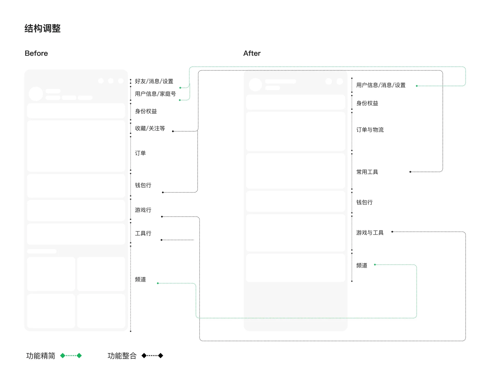
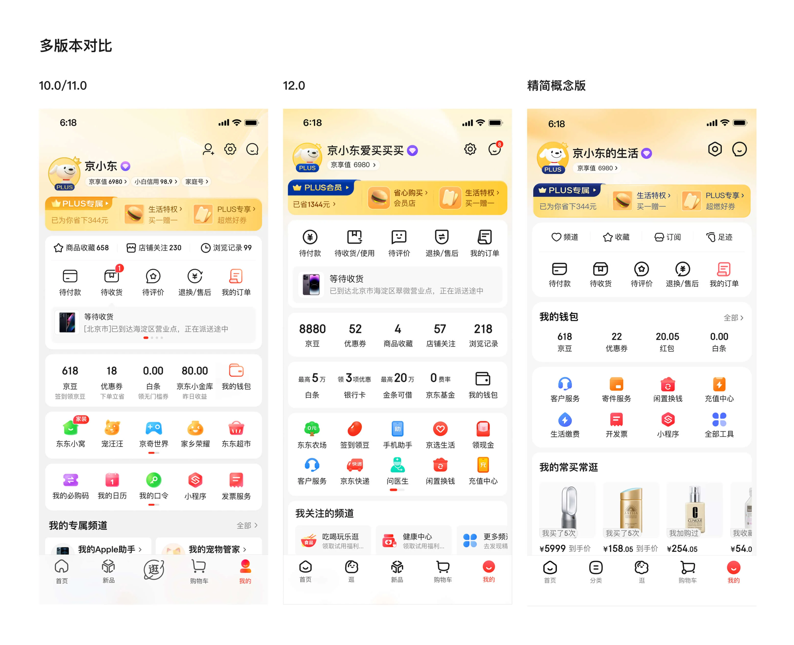
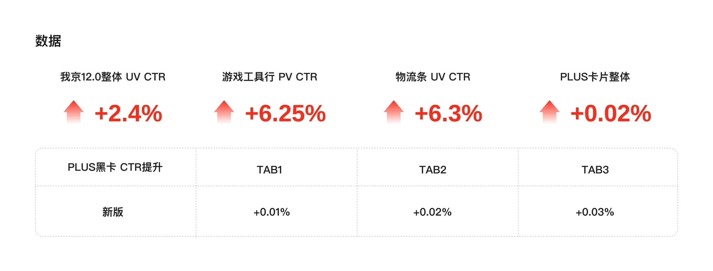
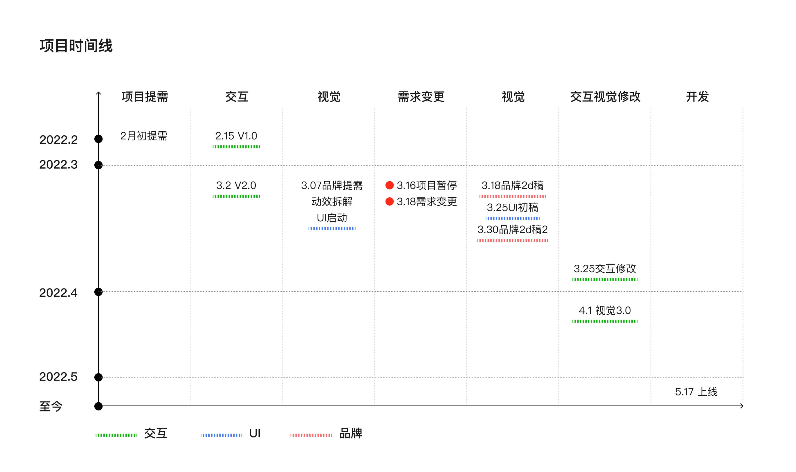
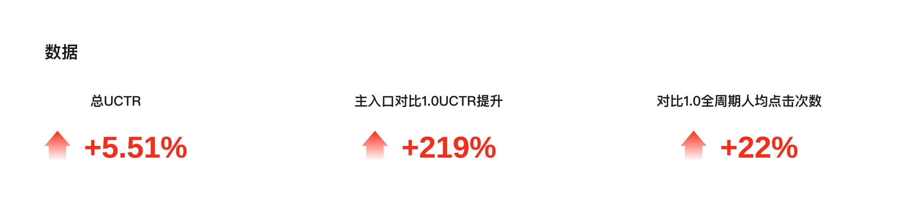
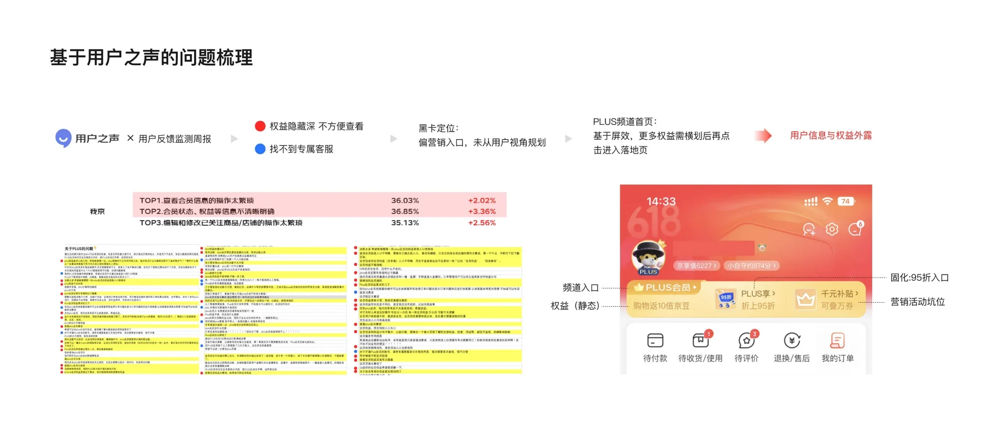
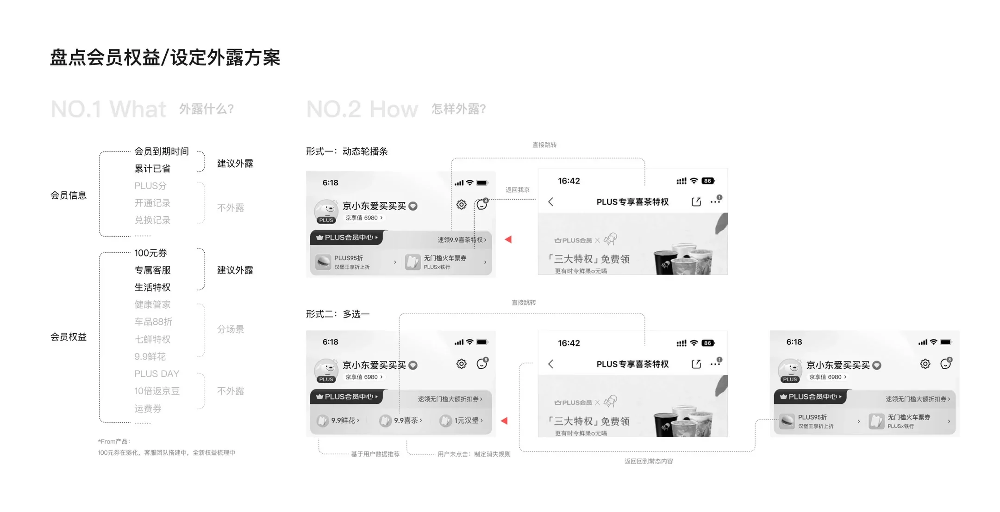
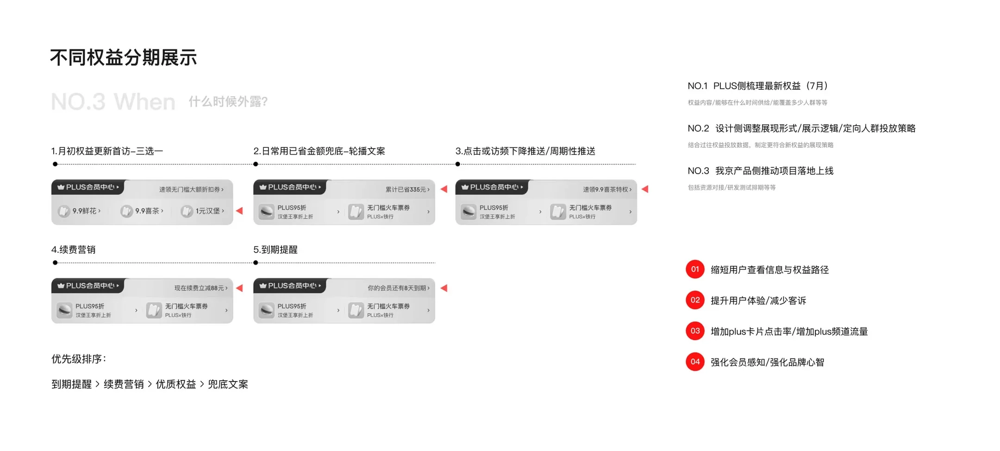

项目概览
时间与类型
我的角色
改版项目视觉设计师之一
我京模块主视觉设计师
动画 / 3D 元素设计师
项目背景
京东 App 年度改版涉及模块多、参与人数广、影响范围大。我京作为重点模块，需要基于自身定位完成视觉与体验升级。

改版项目视觉设计师之一
我京模块主视觉设计师
动画 / 3D 元素设计师
京东 App 年度改版涉及模块多、参与人数广、影响范围大。我京作为重点模块，需要基于自身定位完成视觉与体验升级。
动线：用户常用功能工具不够聚合
屏效：功能过多且信息复杂，屏幕利用效率偏低
会员：会员模块视觉不突出，品牌力传达不足
视觉：视觉陈旧，细小文字多，层级嵌套
在保留用户熟悉功能的基础上，尽量聚合高频使用入口，提升屏幕利用效率，并提高模块整体点击表现。
优化视觉表现，让页面更舒适更规整，更符合12.0整体至真至简的视觉设定。


围绕简单、低价的战略方向，结合12.0至真至简的设计语言，探索页面卡片、图标、色彩、会员氛围的视觉节奏。
结构：参与梳理「我的京东」核心功能区，包括用户信息、订单、资产、权益、常用工具和推荐内容等模块。
视觉：负责「我的京东」页面主视觉设计，优化顶部会员区、功能入口、钱包资产、工具区和底部内容模块。
落地：与产品、运营和研发团队协作，完成方案评审、设计走查、上线和数据复盘。

我京模块主设计师
3D和动画设计师
围绕「我的京东」模块加强福利运营能力，通过我京页面头部 JOY 管家功能，将福利内容聚合展示。

福利感知弱：原小福星项目通过气泡推送权益，用户对福利供给的感知较弱，数据表现不佳。
屏效低：原形式占据页面高度较大，屏幕利用效率不高。
能承载的福利内容少：运营侧新整合的券、京豆权益难以表现。
在不破坏我京原有结构的基础上，新增更醒目的福利入口与承接页面，让用户更容易发现、领取和回看福利，同时提升我京模块的营销效率和整体UCTR。
设计我京页面中的小福星福利入口，优化头部区域高度、背景氛围和动效表现，提升点击效率。
参与「天天领福利」页面设计，完成优惠券、PLUS 权益、京豆等福利内容的视觉整合，让不同类型福利具备统一的领取体验。和研发团队协作，完成方案评审、设计走查、上线跟进和数据复盘。
根据业务需求，持续维护福袋动效、领取记录、Banner 与商品楼层等迭代内容。

交互+视觉设计师，负责 PLUS 会员卡片的梳理、展示策略和设计方案推进。
针对 PLUS 会员权益在线上入口偏深、信息分散、感知弱的问题，开展设计方案研究。
权益入口偏深：通过用户之声平台梳理用户反馈显示，PLUS 权益隐藏深，入口推送福利不够吸引人。
营销太强：PLUS 频道偏营销，未从用户视角规划权益外露。
查找成本高：用户难以快速找到专属客服与福利内容。
通过在我京页面提供更多针对 PLUS 会员的入口优化，缩短用户查看路径，提升权益曝光效率。
强化权益感知，为续费、活动和权益使用提供稳定入口。

梳理权益：梳理会员到期时间、已省金额等内容，并区分为直接外露、分场景外露和不外露信息。
外露形式：兼顾动态轮播、多态展示等形式，让卡片既能承载更多权益信息，又不影响我京原有结构。
不同时机的露出策略：根据用户状态制定展示策略，覆盖月初更新、日常访问、续费营销、到期提醒等场景。
PLUS卡片信息策略：梳理不同会员状态下的卡片信息层级，突出权益价值、开通续费与关键转化入口。
设计推进：推进卡片结构、状态样式、权益露出与动效规则，并协同产品、运营、研发落地上线。
期望结果：提升PLUS权益感知与会员转化效率，优化用户查看和使用会员权益的体验。


方案帮助用户更快看到 PLUS 优惠和可用权益，降低查找成本。
项目也让 PLUS 权益展示从固定入口升级为更灵活的信息触点，有助于提升会员感知和续费转化。
模块的功能设计不仅要考虑营销需求，也要重点从用户角度考量。会员入口更多的是承载身份、权益、优惠等内容，不仅仅是一个点击位。